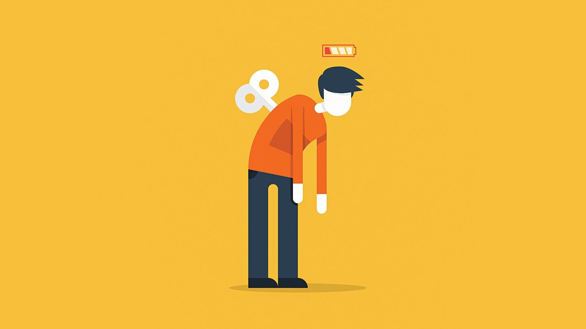

Boredness: some musical recommendations to bring back the fun
January 4, 2020
1. High-energy workout or video game tracks for pace
Workout music and fast-paced video game tracks are designed for focus and energy. Listening to a playlist like this at work can have the same effect on pace of work too. Tight deadline? Get on with the same playlist you use on your morning runs or in the gym.
2. Need to immerse in the task at hand? Try instrumentals
If you have a task at hand that needs complete, undivided attention, try music with no lyrics. These songs reduce cognitive overload and allow you to focus on the task at hand. Even songs with more even musical notes work, reducing the complexity your mind is engaged in and yet, providing the boost you need to complete the job.
3. On a creative deadline? Lower the tempo
Songs with 50-80 beats per minute induce an alpha state that keeps your mind calm yet alert, fuels your imagination, and heightens concentration. Alpha state is said to be the best frame of mind to find creative insight from a pool of data, thus further fueling your creativity.
4. Feel-good songs for Monday and post-holiday blues
After two days of complete freedom, Mondays are by far the worst day of the week as far as productivity is concerned. You can get yourself a relaxed, happy Sunday and immerse yourself in meetings and brainstorms to get your brain cells active again. But if that is not a choice and you just have to get through the piles of work, try some feel good music to get going.